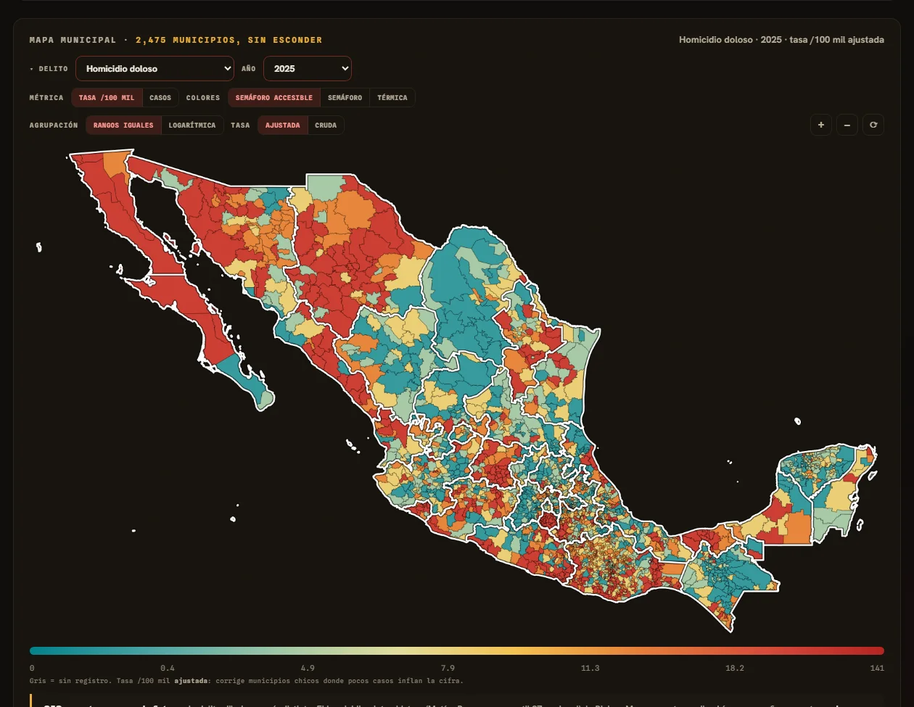
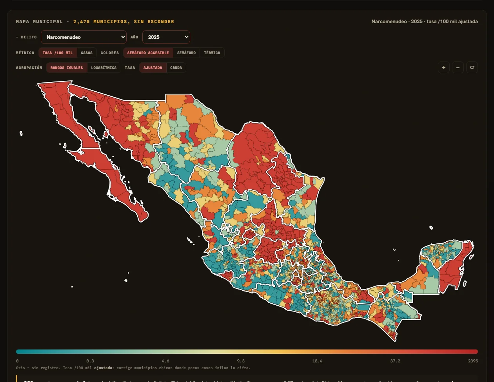
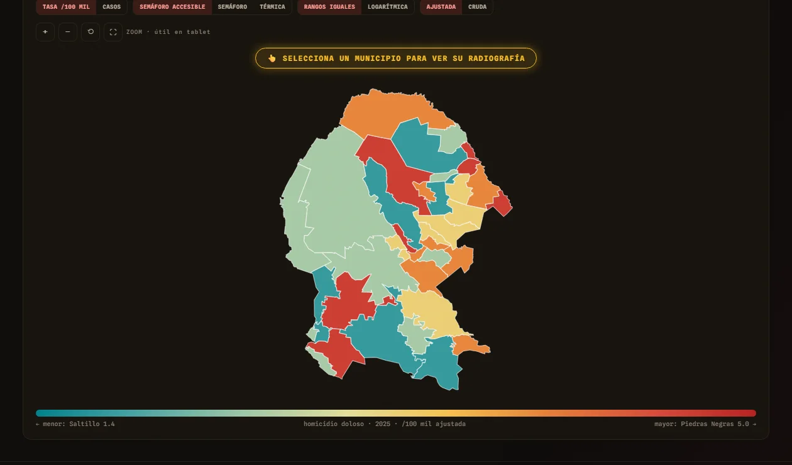
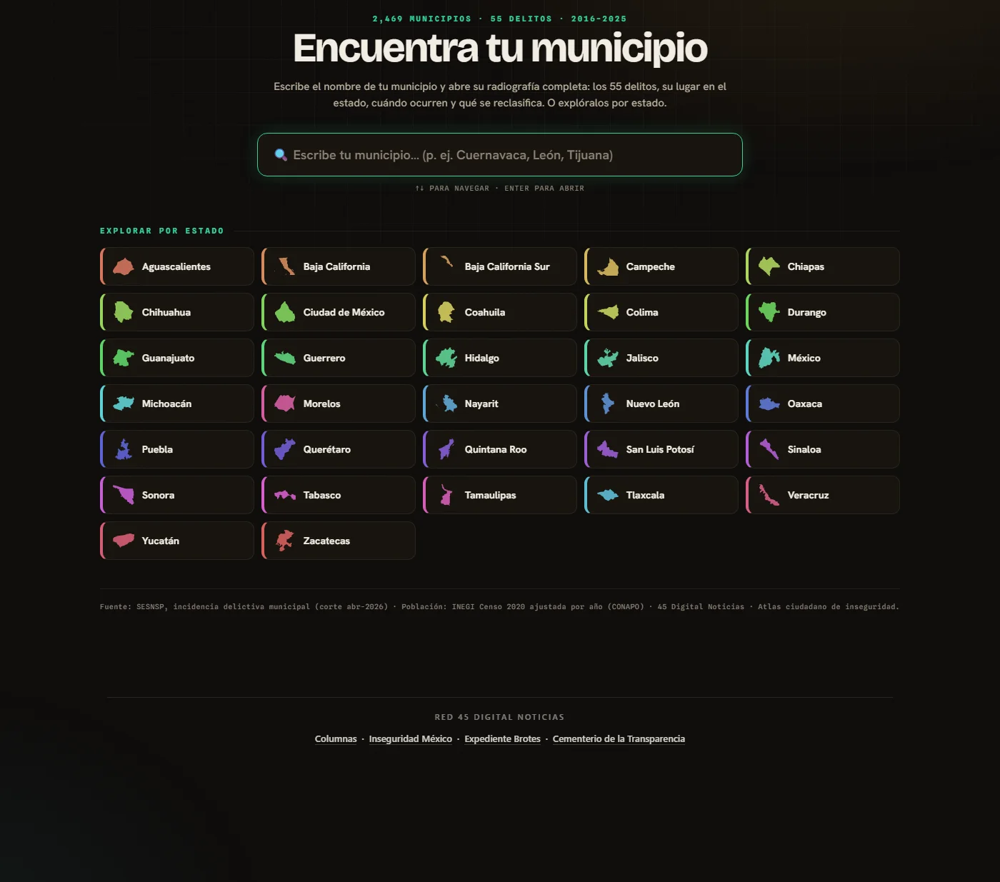
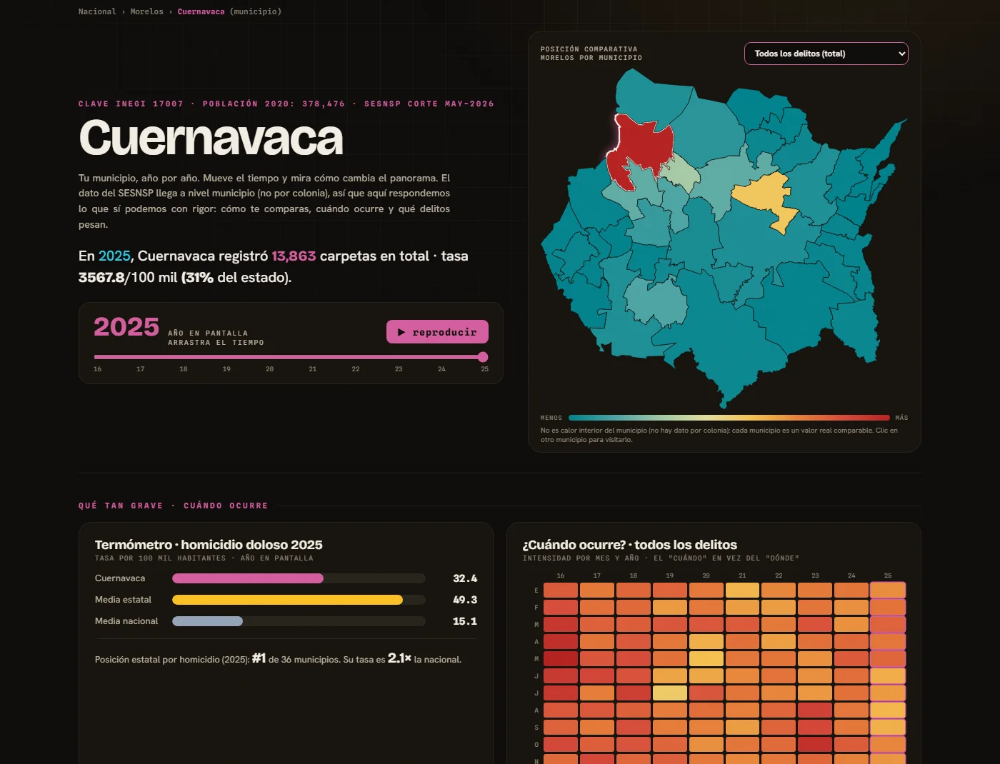
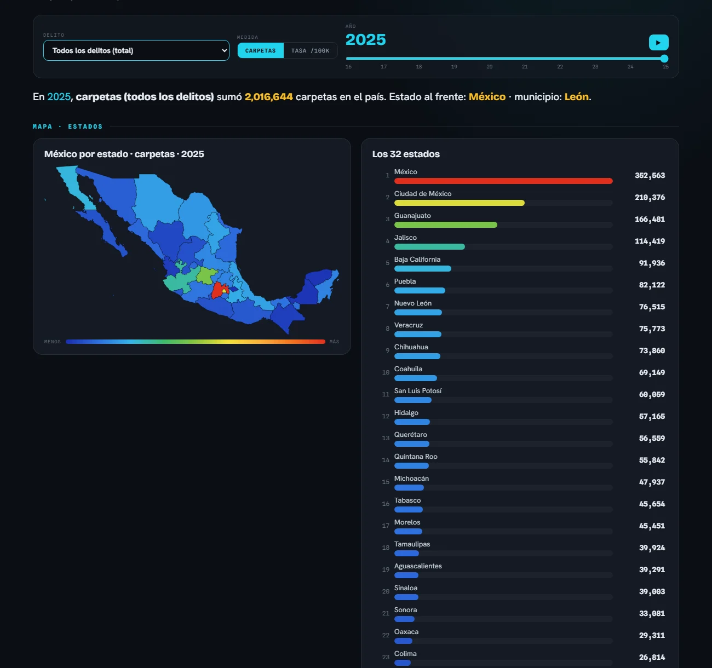

Cómo leer Inseguridad México (y por qué lo construimos así)
México discute su seguridad con cifras sueltas: un porcentaje en una mañanera, un ranking en un titular, un mapa rojo en un noticiero. Cada cifra suele ser cierta, y cada una, sola, suele contar solo la parte que conviene a quien la enuncia. Inseguridad México existe para lo contrario: poner todas las cifras oficiales en un mismo lugar, con el catálogo completo de delitos, su historia y su fuente, para que cualquier persona pueda auditar lo que se le dice.
Esta primera columna es la guía de uso. No porque el tablero sea difícil, pues está hecho para leerse de un vistazo, sino porque algunas de sus piezas muestran cosas que ningún reporte oficial pone junto, y conviene saber exactamente qué se está viendo.
Primero: el país, municipio por municipio
Lo primero que aparece es un mapa de México pintado municipio por municipio: 2,475 piezas, cada una con su propia cifra oficial. Verde azulado donde la tasa es baja, rojo donde arde (semáforo accesible, legible también para daltónicos). No hay degradados inventados: cada color es un dato, y un clic en cualquier municipio abre su radiografía completa. Puede elegir cualquiera de los 55 delitos del catálogo, o el total de carpetas.
Dos decisiones de diseño importan aquí, y las declaramos:
Usamos tasas, no volúmenes. El Estado de México registra más carpetas que Colima por una razón que no necesita criminólogos: tiene casi veinte veces su población. Dividir entre habitantes es lo único que permite comparar. Por tasa de homicidio doloso en 2025, el primer lugar nacional no es ninguno de los estados grandes: es Colima, con 72.6 por cada 100 mil habitantes; Morelos es segundo con 48.5.

La tasa se ofrece cruda y ajustada. En un municipio de 3 mil habitantes, dos homicidios disparan la tasa a niveles de guerra; por eso el mapa arranca en la versión ajustada (suavizado bayesiano) que corrige ese espejismo de los municipios pequeños, y deja la cruda a un clic para quien quiera el dato sin tratar. Para no perderse entre 2,475 piezas, la división estatal se traza encima de la municipal: la línea gruesa es el estado, la fina el municipio.
Cambie de delito y observe algo que ningún comunicado muestra: cada delito dibuja un país distinto. El homicidio arde en el Pacífico norte (Manzanillo: 117 por cada 100 mil, el máximo nacional); el narcomenudeo enciende la Riviera Maya, que en homicidio se ve tranquila (Tulum está en el percentil 99 nacional de narcomenudeo). Misma república, geografías de violencia diferentes. Por eso el propio mapa lo advierte: no se vaya con la finta del delito que trae en pantalla.

Su estado: los 55 delitos, sin resumen que esconda
Haga clic en cualquier estado, o entre directo a las radiografías estatales y elija el suyo. Lo que encuentra es deliberadamente completo: los 55 subtipos delictivos del catálogo oficial del Secretariado Ejecutivo (SESNSP), agrupados por el bien jurídico que afectan, cada uno con su volumen, su porcentaje del total estatal, su miniserie 2015-2025 y su variación.
¿Por qué los 55 y no los diez "importantes"? Porque la selección es la primera forma del ocultamiento. Un resumen decide por usted qué importa; el catálogo completo le permite decidirlo a usted.
Tres herramientas acompañan la tabla:
- El histórico: cualquier delito, de 2015 a mayo de 2026, en vista mensual, trimestral, semestral o anual. El último periodo incompleto siempre aparece marcado como parcial: una caída al final de una gráfica que no avisa que el periodo está incompleto es una mentira visual, y aquí no las hay.
- El ranking por periodo: los delitos del estado enumerados de menor a mayor en el año o trimestre que usted elija, listo para capturar y compartir con su fuente al pie.
- El mapa municipal, sincronizado con ese mismo periodo: el calor dentro del estado, municipio por municipio.


La pieza que nadie más publica: el espejo
Aquí está el corazón metodológico del proyecto, y merece explicación.
El catálogo oficial no solo tiene categorías precisas como "Homicidio doloso" o "Robo a casa habitación". Tiene también bolsas: "Otros delitos que atentan contra la vida", "Otros robos", "Otros delitos del Fuero Común". Son legales y a veces necesarias: hay hechos que no encajan limpio en ninguna casilla. Pero tienen una propiedad incómoda: lo que entra en una bolsa deja de poder auditarse. Nadie puede saber, desde el dato público, qué delitos contiene exactamente.
A cada categoría precisa le corresponde una bolsa del mismo bien jurídico. Las llamamos espejos. Y la pregunta de auditoría es simple: cuando un delito específico baja, ¿bajó la violencia, o el registro se movió al espejo?
Para responderla sin perseguir caso por caso, construimos el Monitor de Opacidad: una matriz de los 32 estados por once años donde cada celda dice qué fracción de todas las carpetas de ese estado cayó en bolsas ese año. Se lee en tres movimientos: la celda (Tabasco 2025: 34 de cada 100 carpetas son inauditables), la fila (si el color se intensifica, el estado mueve cada año más registro a las bolsas), y el Δ (el saldo de la década: rojo se opacó, cyan se transparentó).

Debajo, el detector de pares muestra los casos concretos: 27 señales donde un delito específico cayó más de 25% mientras su espejo subió más de 25% entre 2018 y 2025, cada una con sus dos series enfrentadas. El cruce de esas dos líneas es la pregunta.

Y aquí la advertencia que repetiremos siempre, porque la seriedad del proyecto depende de ella: opacidad no es culpa. Una celda alta o una señal no prueban manipulación; pueden ser cambios de criterio de captura o reformas legales. Lo que sí vuelven innegable es cuánto del delito de cada estado no se puede auditar, hacia dónde va esa fracción, y qué casos merecen explicación pública. Las señales son hipótesis a auditar. Quien tenga la explicación, tiene en este medio el espacio para darla.
Y ahora, hasta el último municipio
El expediente ya no se detiene en el estado. Haga clic en cualquier municipio del mapa estatal, o entre por Encuentra tu municipio en la cabecera, y abrirá su radiografía propia: los mismos 55 delitos del catálogo, pero a la escala donde la inseguridad se vive. Hasta donde sabemos, es el único lugar que reúne los 2,469 municipios del país con su catálogo completo, año por año, de 2016 a 2025.

Cada municipio responde con rigor lo que sí se puede contestar, y declara lo que no:
- Su lugar, no su interior. El dato del SESNSP llega al municipio, no a la colonia. Por eso no pintamos calor dentro de un municipio: sería inventar dónde se concentra. En su lugar mostramos un mapa de posición que colorea a todos los municipios del estado y enciende el suyo, para contestar con honestidad si está peor o mejor que sus vecinos.
- El cuándo, en vez del dónde. Un calendario de calor de mes por año revela la estacionalidad: en qué meses se dispara cada delito.
- Un termómetro que pone su tasa de homicidio junto a la media de su estado y la del país, para medir el tamaño real del problema.
- Los pares espejo y la escalada de los 55 delitos, también a escala municipal y filtrables por año.

Y un ranking que reordena el país. En Ranking nacional elija un delito y un año: los 32 estados y los 2,469 municipios se acomodan al instante, en número de carpetas o en tasa por habitante. Quien encabeza el homicidio no encabeza la extorsión, y quien manda en volumen cae cuando se mide por habitante. Ahí se ve, de un golpe, dónde pega cada delito.

Lo que sostiene todo: la trazabilidad
Cada cifra publicada en Inseguridad México tiene un registro en un archivo público de auditoría con su fuente primaria, su método de cálculo y su fecha de corte. Los datos provienen de bases oficiales (SESNSP, el Registro Nacional de Personas Desaparecidas RNPDNO, INEGI y CONAPO) y cualquier persona con una computadora puede reproducir cada número desde el archivo original. Cuando dos cortes oficiales difieren entre sí, lo decimos; cuando un dato no existe, lo decimos también, en lugar de rellenarlo.
Las magnitudes de fondo, por si las busca al entrar: en 2025 el país registró 2,016,724 carpetas de investigación del fuero común y 20,191 homicidios dolosos: un descenso de 20.7% frente a 2024 que este tablero permite examinar delito por delito y estado por estado, en lugar de aplaudirlo o negarlo en bloque. Y en el registro de desaparecidos permanecen 133,924 personas en calidad de activas: detrás de cada fila de esa base hay una familia que sigue buscando. Ese dato no baja con ningún comunicado.
El tablero no opina. Ordena la evidencia y la deja auditable. La opinión, la suya, empieza donde termina el mapa.
Las cifras de esta columna provienen del registro de trazabilidad del proyecto (cifras.csv) con cortes: SESNSP estatal mayo 2026, RNPDNO 3 de junio de 2026, CONAPO proyecciones 2025. Metodología completa, fuentes y glosario, en las secciones correspondientes del sitio.